Self-study web lesson. The slide image, reading text, and question match the PowerPoint.
Main formula
W = mg · M = F × d
Balance conditions
ΣF = 0 · ΣM = 0
Medical link
Beds, lifts, wheelchairs, tables, carts.
Lesson map
- 1. Statics for Medical Equipment
- 2. Why Do We Need Statics?
- 3. From Materials to Mechanics
- 4. What Is Statics?
- 5. Mass and Weight
- 6. Example: Patient Weight
- 7. What Is Force?
- 8. Force Arrows
- 9. Free-Body Diagram
- 10. Equilibrium: No Vertical Movement
- 11. Patient in the Middle
- 12. Why Half and Half?
- 13. Support Reactions
- 14. Patient Is Not in the Middle
- 15. Moment of Force
- 16. Door Example
- 17. Seesaw Rule
- 18. Heavy and Light Person
- 19. Two Conditions for Statics
- 20. Take Moment About Point A
- 21. Support Force Formulas
- 22. Example Task: Patient Off-Center
- 23. Step 1: Weight and Total Force
- 24. Step 2: Moment Balance
- 25. Formulas for One Point Load
- 26. Practice Task 1: Centered Patient
- 27. Practice Task 2: Off-Center Patient
- 28. Practice Task 3: Seesaw
- 29. Practice Task 4: Bed + Equipment
- 30. Practice Task 5: Will It Tip?
- 31. Common Mistakes
- 32. Summary
Part 1 — Why Statics Matters
Statics helps us check safety and balance in hospital equipment.
Statics for Medical Equipment
Forces. Balance. Supports. Moments.
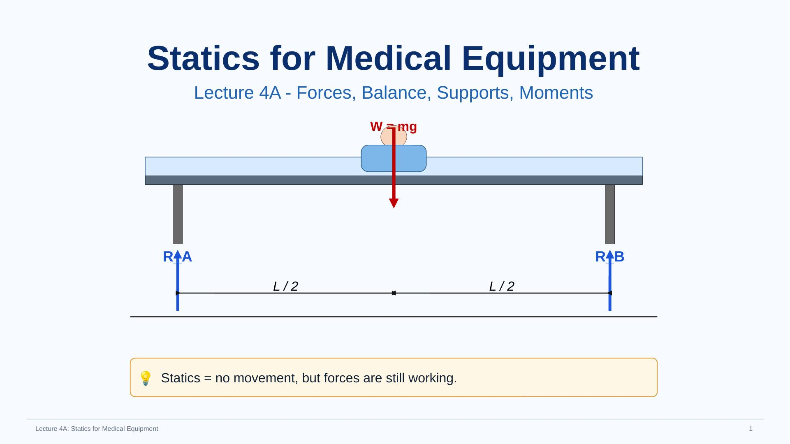
Today we start the statics part of mechanics. Statics means the object is not moving, but forces are still working.
A bed, chair, table, lift, or wheelchair must be safe and balanced.
Today we learn how to see forces and calculate simple balance.
Think and answer
What does statics study?
Show answer
Objects at rest, with balanced forces.
Why Do We Need Statics?
Hospital equipment must be safe.
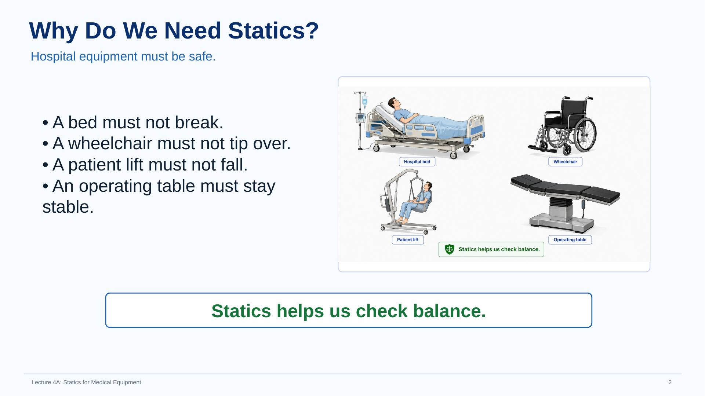
A bed must not break. A wheelchair must not fall. An operating table must stay stable.
Statics helps us check balance and safety.
This is important for medical IT support because you may work near real devices, not only computers.
Think and answer
Name one hospital object that must be balanced.
Show answer
Bed, wheelchair, patient lift, operating table, cart.
From Materials to Mechanics
A strong material is not enough.
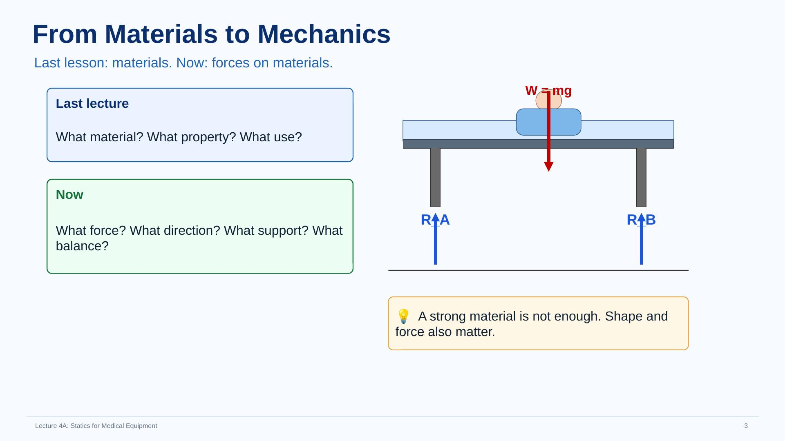
Last lesson was about materials. Now we study forces on those materials.
Even strong metal can fail if force is too large or placed badly.
So we ask: what force acts here? Where does it act? Can the object stay balanced?
Think and answer
Why are materials alone not enough?
Show answer
Because shape, force, distance, and balance also matter.
Part 2 — Mass, Weight, Force, and Equilibrium
We learn the basic words and formulas before solving tasks.
What Is Statics?
Statics = no movement.
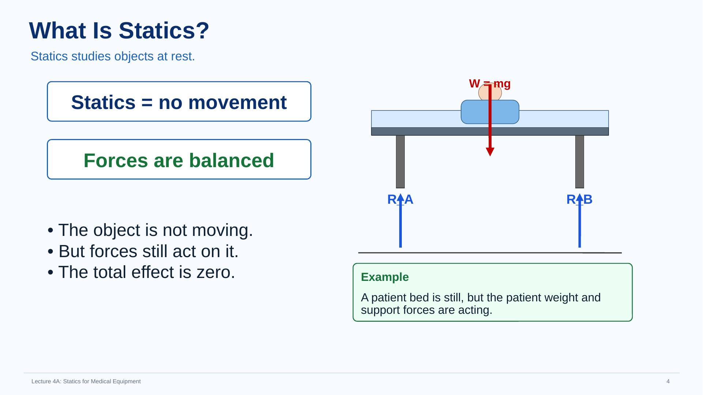
The object is not moving. But this does not mean there is no force.
Forces can push down, supports can push up, and the object can still stay still.
Statics studies these balanced forces.
Think and answer
Can an object at rest have forces on it?
Show answer
Yes. The forces can be balanced.
Mass and Weight
Mass is kg. Weight is force.
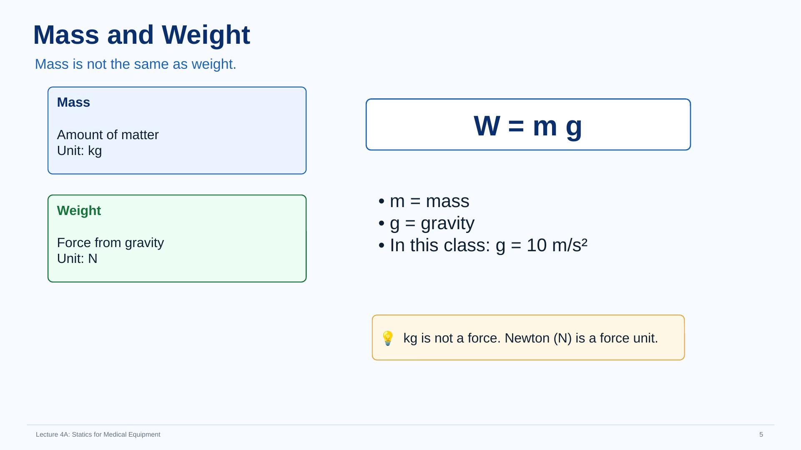
Mass is the amount of matter. We measure mass in kilograms.
Weight is the force from gravity. We measure weight in newtons.
Formula: W = m g.
Think and answer
Is kg a unit of force?
Show answer
No. kg is mass. Newton is force.
Example: Patient Weight
Use g = 10 m/s².
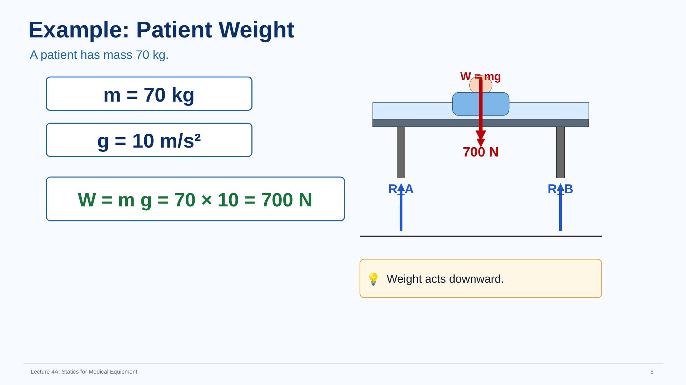
A patient has mass 70 kg.
Weight is W = m g.
W = 70 × 10 = 700 N.
So the patient pushes down with 700 newtons.
Think and answer
What is the weight of a 70 kg patient if g = 10?
Show answer
700 N.
What Is Force?
A force can push, pull, or press down.
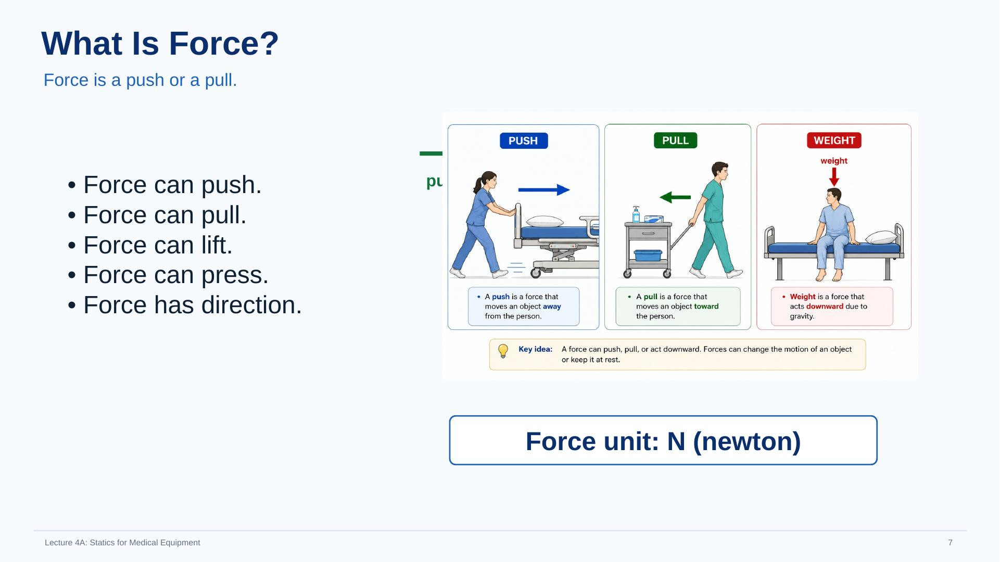
Force can push a bed away from a person.
Force can pull a cart toward a person.
Weight is also a force. It acts downward because of gravity.
Force has direction.
Think and answer
Give one example of force.
Show answer
Push, pull, lift, press, or weight.
Force Arrows
We draw forces with arrows.
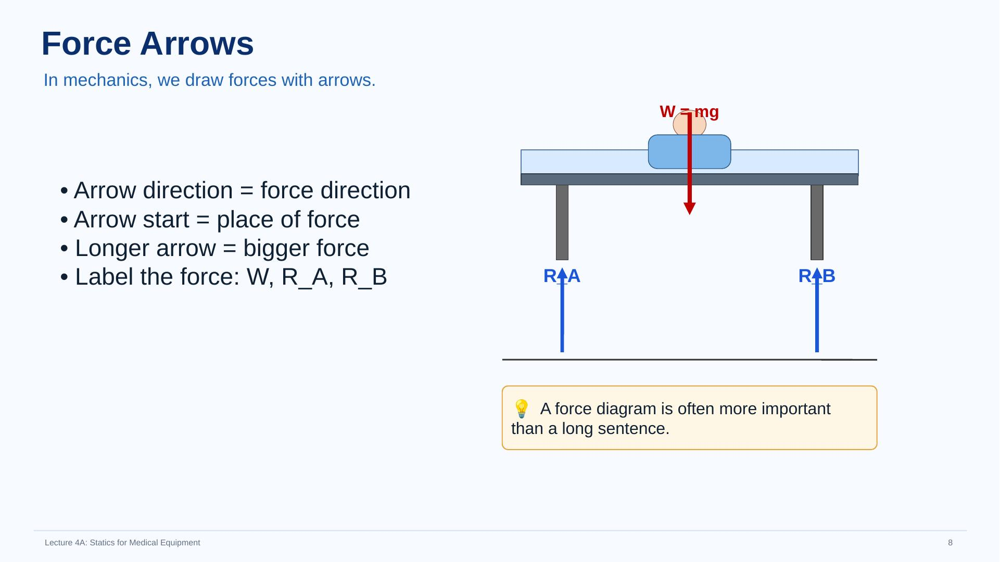
An arrow shows direction.
An arrow also shows where the force acts.
A longer arrow can show a bigger force.
In statics diagrams, arrows are very important.
Think and answer
What does a force arrow show?
Show answer
Direction, place, and sometimes size.
Free-Body Diagram
Simplify the real object.
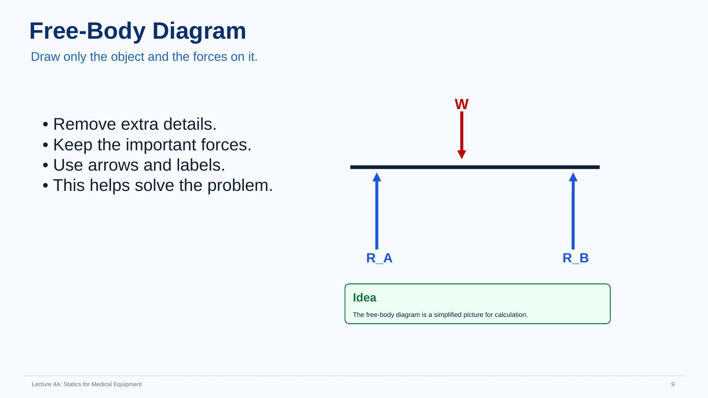
A free-body diagram removes extra details.
We keep only the object and the forces.
This helps us calculate and not get confused by the picture.
Think and answer
Why do we use a free-body diagram?
Show answer
To focus only on the forces.
Equilibrium: No Vertical Movement
Upward forces equal downward forces.
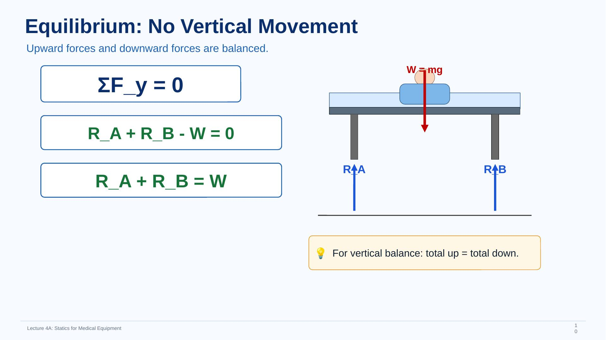
If the bed is not moving up or down, vertical forces are balanced.
The condition is: sum of vertical forces equals zero.
In simple words: support forces up equal weight down.
Think and answer
What does equilibrium mean?
Show answer
Balance. No acceleration.
Patient in the Middle
Two supports share the weight equally.
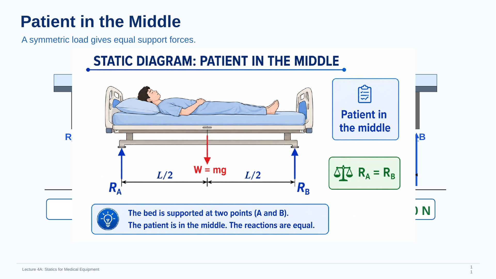
The patient is in the middle of the bed.
The left and right supports are symmetric.
So the reactions are equal: RA = RB.
If W = 700 N, each support gets 350 N.
Think and answer
Why are the support forces equal here?
Show answer
Because the patient is in the middle.
Why Half and Half?
Use two simple equations.
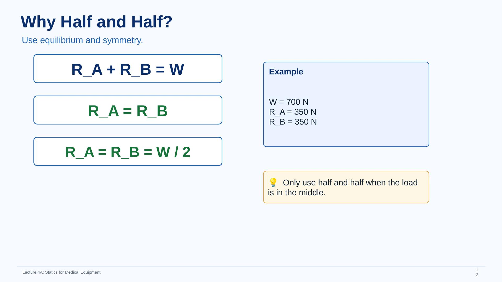
The total upward force must equal the downward weight.
RA + RB = W.
If the patient is in the middle, RA = RB.
So each support carries W divided by 2.
Think and answer
If W = 600 N in the middle, what is each support?
Show answer
300 N and 300 N.
Support Reactions
Supports push up.
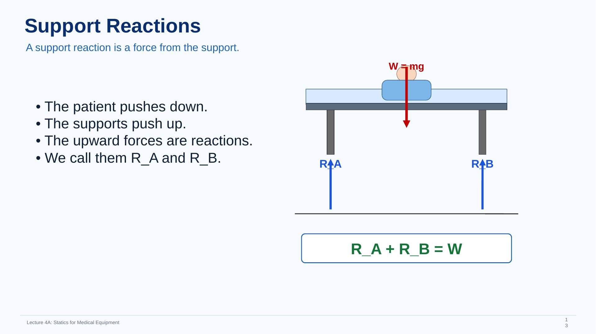
The patient pushes down on the bed.
The bed pushes down on the supports.
The supports push up on the bed.
These upward forces are called support reactions: RA and RB.
Think and answer
What direction do support reactions act?
Show answer
Upward.
Part 3 — Moments and Support Reactions
Off-center loads need moments. The closer support gets bigger force.
Patient Is Not in the Middle
The closer support gets bigger force.
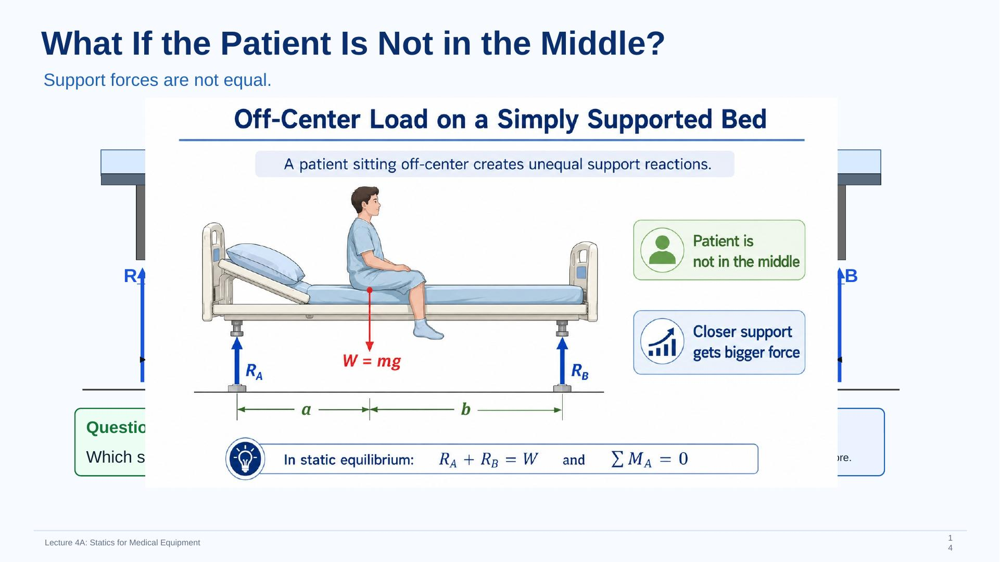
Now the patient is closer to one support.
The two reactions are no longer equal.
The closer support carries more load.
To calculate this, we need moments.
Think and answer
Are the supports always equal?
Show answer
No. They are equal only in symmetric cases.
Moment of Force
Moment is turning effect.
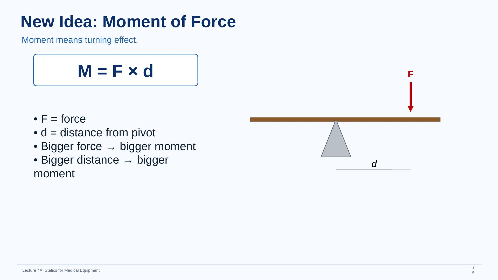
A force can make an object rotate.
This turning effect is called moment.
Formula: M = F × d.
F is force. d is distance from the pivot.
Think and answer
What makes moment bigger?
Show answer
Bigger force or bigger distance from the pivot.
Door Example
Distance matters.
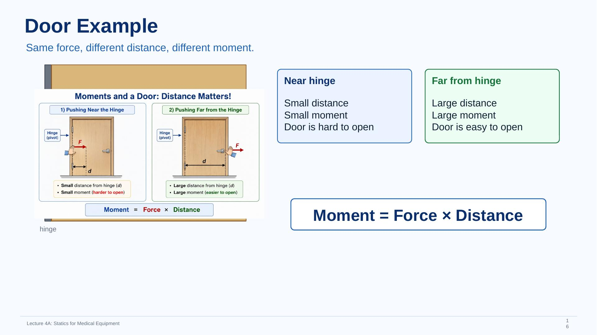
Try opening a door near the hinge. It is hard.
Now push far from the hinge. It is easier.
The force can be the same, but the distance is different.
That is why the moment is different.
Think and answer
Where is it easier to push a door?
Show answer
Far from the hinge.
Seesaw Rule
Left moment equals right moment.
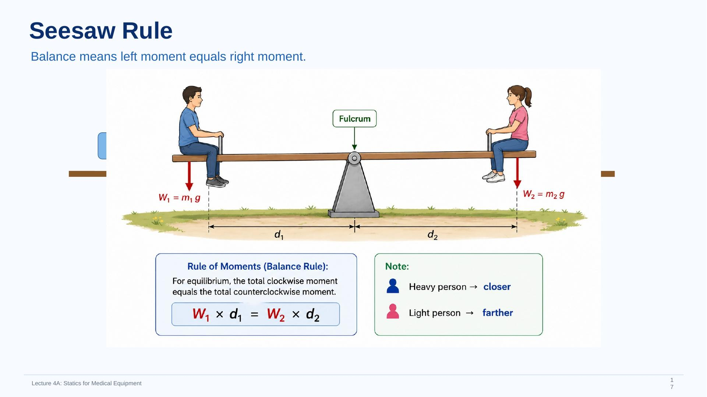
A seesaw is a simple example of moments.
One person creates a moment on the left.
The other creates a moment on the right.
For balance: W1 × d1 = W2 × d2.
Think and answer
What is the balance rule for a seesaw?
Show answer
Left moment = right moment.
Heavy and Light Person
Heavy person closer. Light person farther.
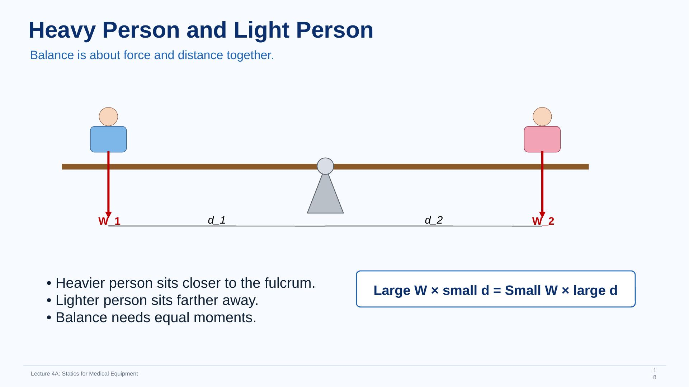
If one person is heavier, they must sit closer to the center.
If one person is lighter, they must sit farther away.
This makes the moments equal.
This is the same idea used in bed support calculations.
Think and answer
Where should the heavier person sit?
Show answer
Closer to the fulcrum.
Two Conditions for Statics
No movement and no rotation.
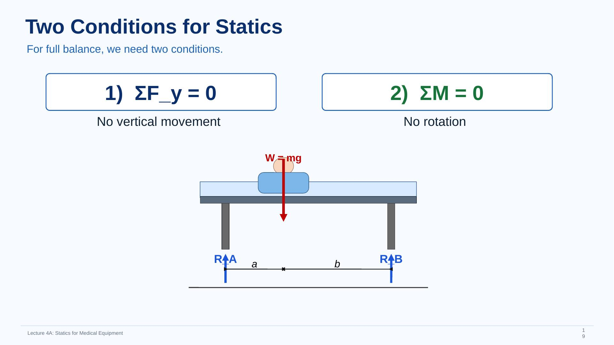
For full static equilibrium, we need two conditions.
First: sum of vertical forces is zero.
Second: sum of moments is zero.
In symbols: ΣFy = 0 and ΣM = 0.
Think and answer
What are the two statics conditions?
Show answer
Sum of forces equals zero, and sum of moments equals zero.
Take Moment About Point A
Choose a pivot to calculate.
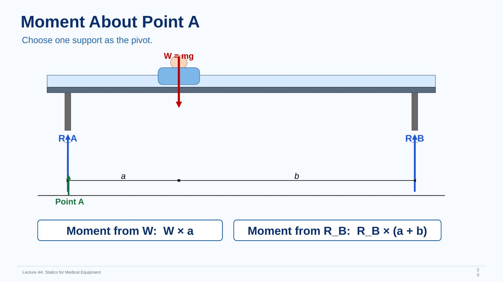
We can take moments about point A.
A force at point A has zero distance from A, so it makes no moment about A.
This helps us remove RA from the moment equation.
Then we can find RB first.
Think and answer
Why take moments about point A?
Show answer
Because RA has zero moment about A.
Support Force Formulas
For one point load between two supports.
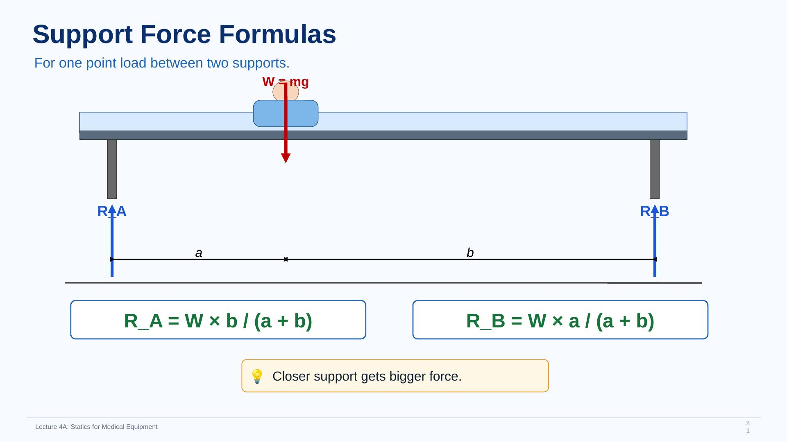
If the load W is between two supports, use distances a and b.
RA = W × b / (a + b).
RB = W × a / (a + b).
The closer support gets the bigger reaction.
Think and answer
If the patient is closer to A, which reaction is bigger?
Show answer
RA is bigger.
Example Task: Patient Off-Center
Given W, a, and b.
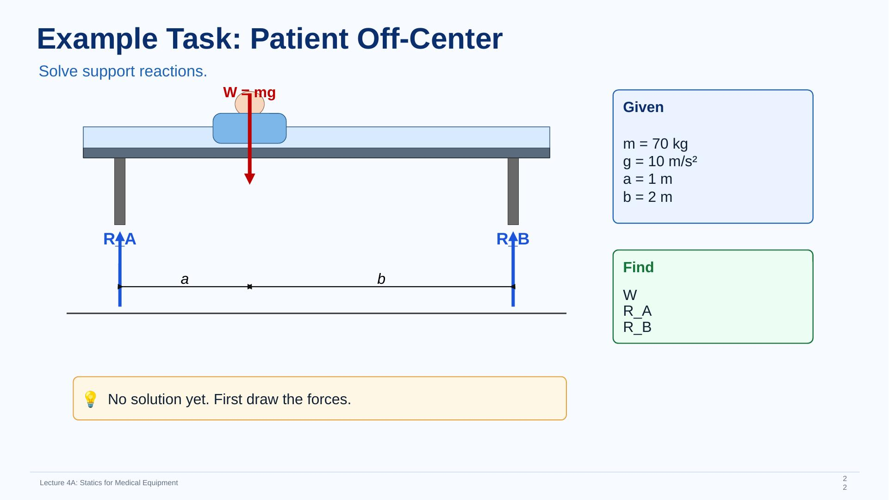
Patient weight is W = 700 N.
Distance from left support to patient is a = 1 m.
Distance from patient to right support is b = 2 m.
Find RA and RB.
Think and answer
What is the total distance between supports?
Show answer
a + b = 3 m.
Step 1: Weight and Total Force
Start with vertical force balance.
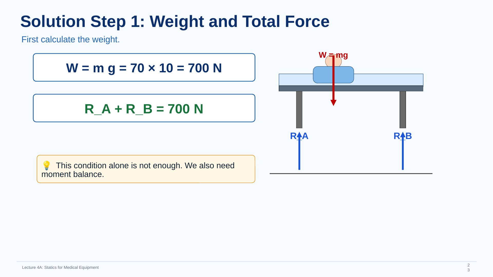
The total downward force is W = 700 N.
The total upward force is RA + RB.
Because the bed is balanced: RA + RB = 700 N.
This is our force check.
Think and answer
What must RA + RB equal?
Show answer
700 N.
Step 2: Moment Balance
Use the moment formula.
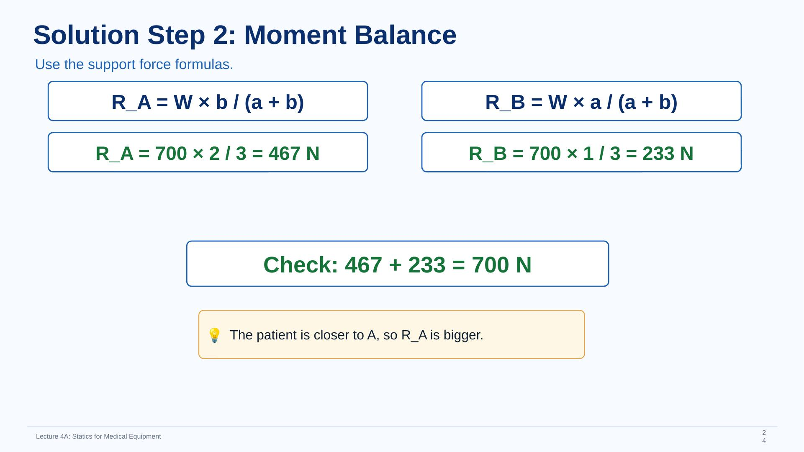
RA = W × b / (a + b).
RA = 700 × 2 / 3 = 467 N.
RB = W × a / (a + b).
RB = 700 × 1 / 3 = 233 N.
Check: 467 + 233 = 700 N.
Think and answer
Which support force is bigger?
Show answer
RA, because the patient is closer to A.
Formulas for One Point Load
Use only for this simple case.
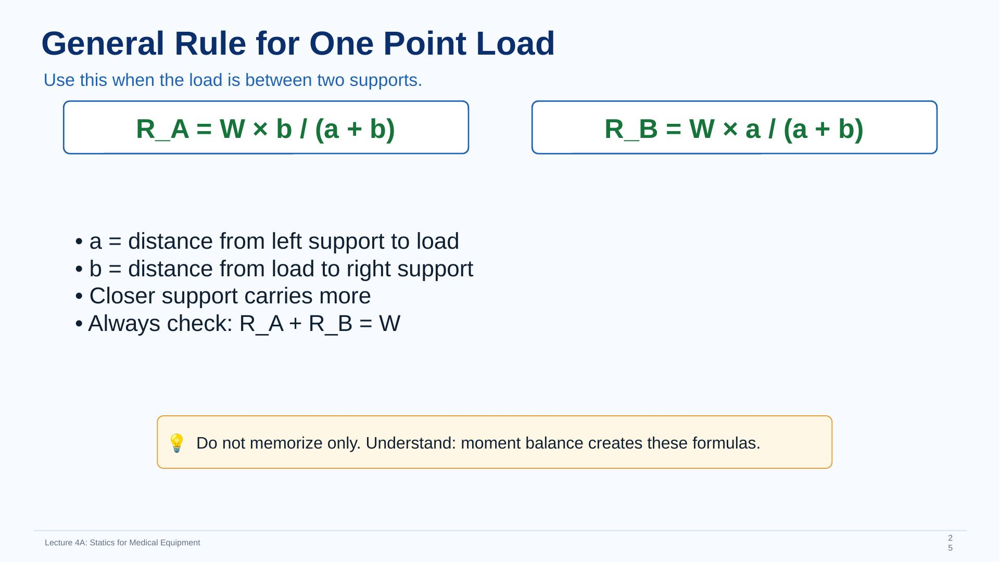
These formulas are useful for one point load between two supports.
RA = W × b / (a + b).
RB = W × a / (a + b).
Do not use them blindly for every problem.
For more complex tasks, write force balance and moment balance.
Think and answer
Why should we not use formulas blindly?
Show answer
Because different problems can have different force arrangements.
Part 4 — Practice Tasks and Summary
Use the same ideas again and again: W = mg, ΣF = 0, M = F × d, ΣM = 0.
Practice Task 1: Centered Patient
Try a simple symmetric case.
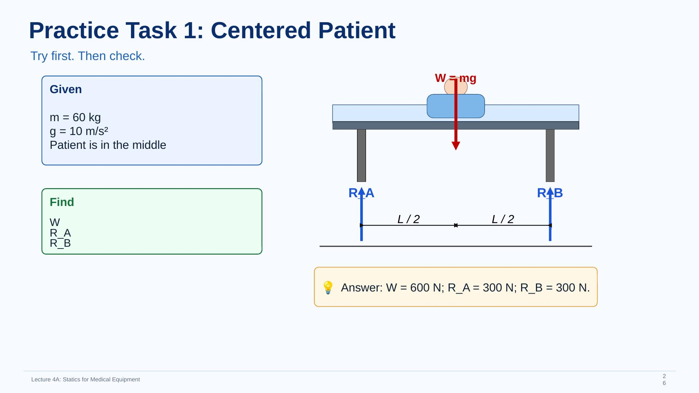
A patient has mass 60 kg.
Use g = 10 m/s².
The patient is in the middle.
Find W, RA, and RB.
Think and answer
Answer?
Show answer
W = 600 N. RA = 300 N. RB = 300 N.
Practice Task 2: Off-Center Patient
Use the formulas.
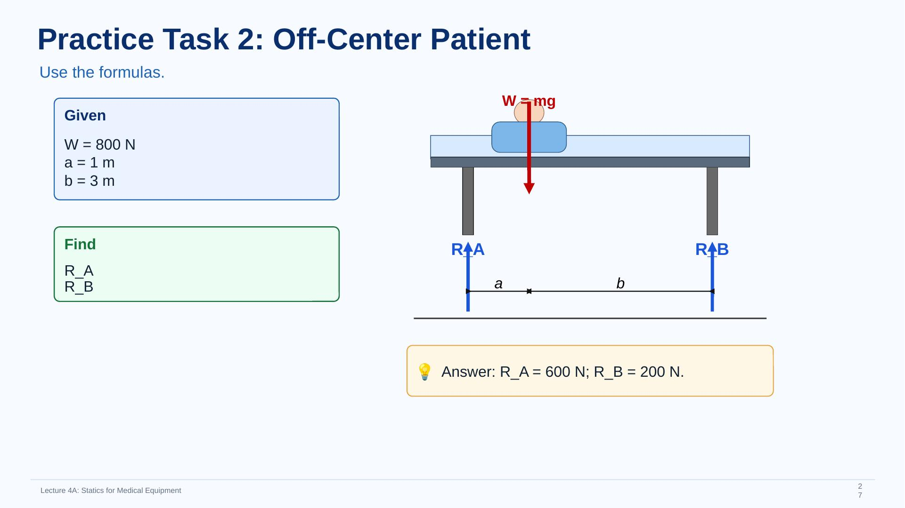
Given W = 800 N.
a = 1 m.
b = 3 m.
Find RA and RB.
Think and answer
Answer?
Show answer
RA = 800 × 3 / 4 = 600 N. RB = 800 × 1 / 4 = 200 N.
Practice Task 3: Seesaw
Use moment balance.
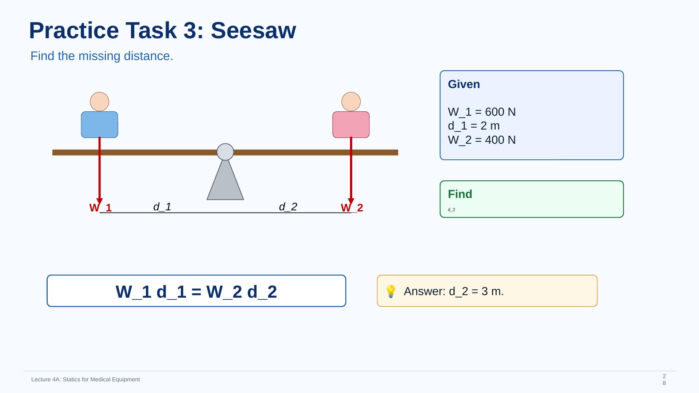
Person 1: W1 = 600 N and d1 = 2 m.
Person 2: W2 = 400 N.
Find d2.
Balance rule: W1 d1 = W2 d2.
Think and answer
Answer?
Show answer
d2 = 600 × 2 / 400 = 3 m.
Practice Task 4: Bed + Equipment
Two loads on one bed.
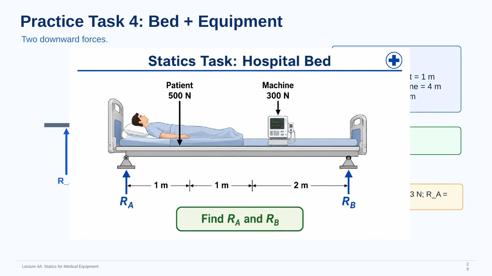
A patient pushes down with 500 N.
A machine pushes down with 300 N.
Use the distances on the diagram.
Find RA and RB.
Think and answer
What is the first step?
Show answer
Add vertical forces: RA + RB = 800 N.
Practice Task 5: Will It Tip?
Compare moments around the pivot.
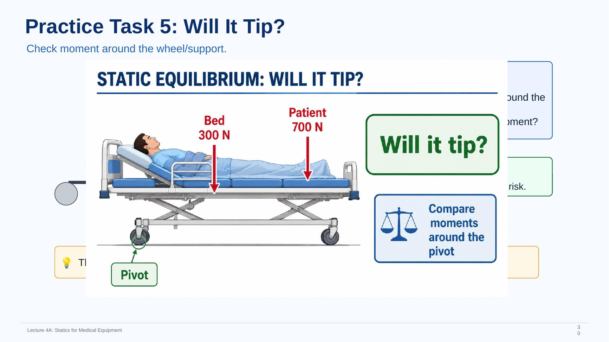
The bed and patient create moments around the pivot.
To know if it tips, compare clockwise and counterclockwise moments.
If the tipping moment is bigger than the stabilizing moment, the bed can tip.
This is a safety question.
Think and answer
What should we compare?
Show answer
Moments around the pivot.
Common Mistakes
Avoid these mistakes.
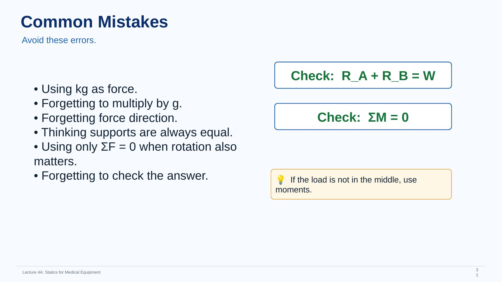
Do not use kg as force.
Do not forget g.
Do not ignore direction.
Do not forget moment.
Do not think supports are always equal.
Think and answer
When are support forces equal?
Show answer
Only in symmetric cases, such as load in the middle.
Summary
Statics helps us check balance and safety.
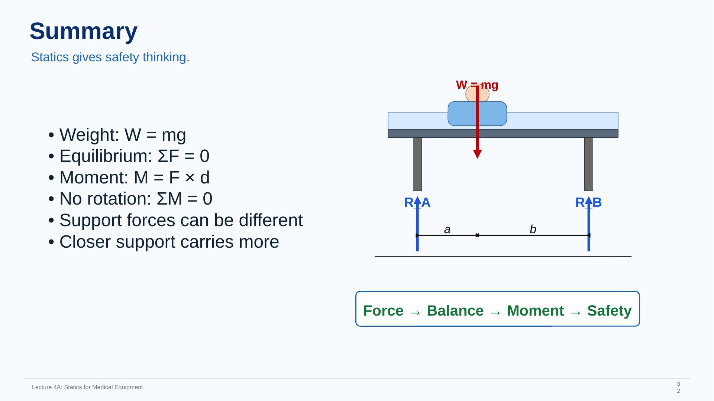
Weight: W = m g.
Equilibrium: ΣF = 0.
Moment: M = F × d.
No rotation: ΣM = 0.
Support forces can be different when the load is not in the middle.
Think and answer
What is the most important safety idea?
Show answer
Check force balance and moment balance.
{kind=link}